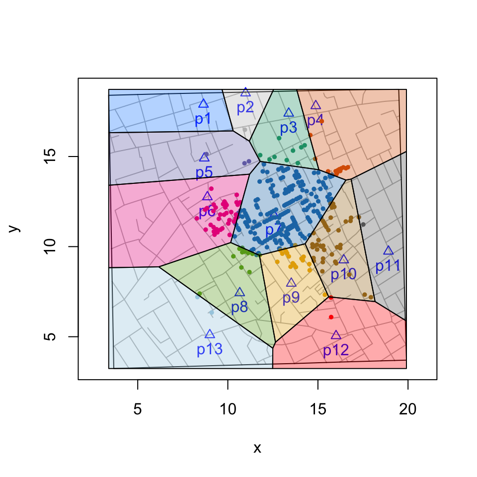

vignettes/tiles.polygons.Rmd
tiles.polygons.RmddeldirPolygons() is a wrapper function that extracts the vertices of ‘deldir’ Delauny triangles and Dirichelet (Voronoi) tiles for use with functions that rely on polygons. The function returns a list of data frames of vertices. This makes tasks like coloring tiles or triangles or counting cases within tiles or triangles easier.
deldirPolygons(sites, rw.data = NULL, rw = NULL, type = "tiles")The functions has four arguments. sites is the data frame of the sites or focal points used to do the triangulation or tessellation. rw.data (rw = ‘rectangular window’)is the data frame of secondary data (e.g., fatalities, customers, etc.). It is useful when the range of secondary data exceeds that of the site data. rw is a vector of the corners of the rectangular window: xmin, xmax, ymin, ymax. type is “tiles” or “triangles”.
# compute vertices of Voronoi tiles
vertices <- deldirPolygons(sites = cholera::pumps, rw.data = cholera::roads)
# define colors, plot map, and color code fatalities
snow.colors <- grDevices::adjustcolor(cholera::snowColors(), alpha.f = 1/3)
cholera::snowMap(add.cases = FALSE)
cholera::addNeighborhoodCases(metric = "euclidean")
# plot color coded polygons
invisible(lapply(seq_along(vertices), function(i) {
polygon(vertices[[i]], col = snow.colors[[i]])
}))
To count the number of cases within each neighborhood, we can use sp::point.in.polygon().
# compute vertices of Voronoi tiles
vertices <- deldirPolygons(sites = cholera::pumps, rw.data = cholera::roads)
# locations of the 578 fatalities in Soho
cases <- cholera::fatalities.unstacked
# count fatalities within each polygon (neigborhood)
census <- lapply(vertices, function(tile) {
sp::point.in.polygon(cases$x, cases$y, tile$x, tile$y)
})
# ID the 13 water pumps
names(census) <- paste0("p", cholera::pumps$id)
# count of fatalities by neighborhood
vapply(census, sum, integer(1L))> p1 p2 p3 p4 p5 p6 p7 p8 p9 p10 p11 p12 p13
> 0 1 13 23 6 61 361 16 27 62 2 2 4To count the number of cases within each triangle:
# compute vertices of Delauny triangles
vertices <- deldirPolygons(sites = cholera::pumps,
rw.data = cholera::roads, type = "triangles")
# locations of the 578 fatalities in Soho
cases <- cholera::fatalities.unstacked
# count fatalities within each triangle
census <- lapply(vertices, function(tile) {
sp::point.in.polygon(cases$x, cases$y, tile$x, tile$y)
})
# ID triangles
names(census) <- paste0("t", seq_along(vertices))
# count of fatalities by triangle
vapply(census, sum, integer(1L))> t1 t2 t3 t4 t5 t6 t7 t8 t9 t10 t11 t12 t13 t14 t15 t16 t17
> 1 0 1 11 43 179 35 2 18 138 15 22 97 0 0 4 1